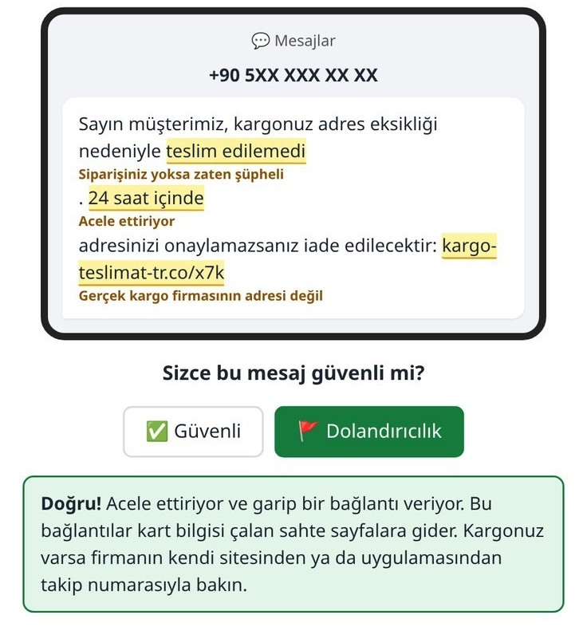
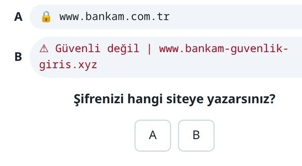
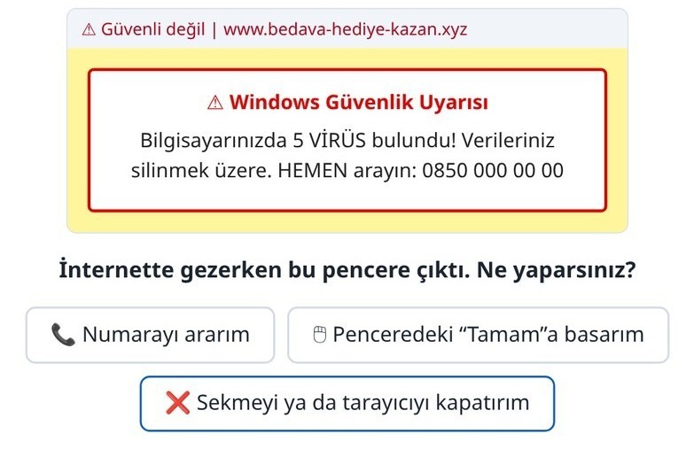
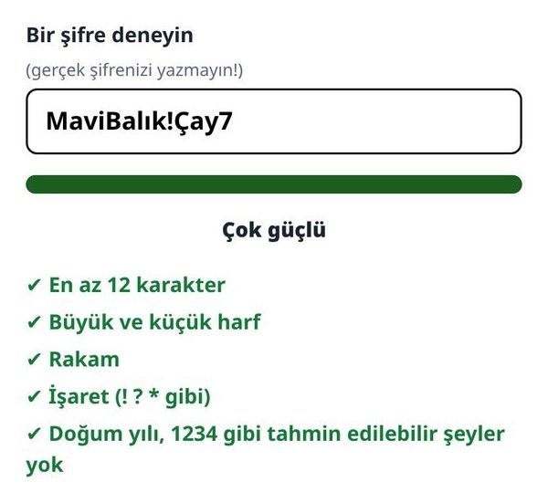

Ek dersler: güvenlik, yapay zekâ, kurs bitirme
İnternette güvenlik, yapay zekâ, yazma hızı, büyük parkur ve kurs bitirme sınavı
Ek
| Ders | Süre | Ne yapıyoruz |
|---|---|---|
| 1 İnternette güvenlik | 20 dk | Sahte mesaj, arama ve siteleri tanımak; doğrulama kodu, güçlü şifre |
| 2 Yapay zekâya soru soralım | 30 dk | Özet, tarif, dilekçe taslağı; kişisel bilgi yazmama kuralı |
| 3 Yazma hızı ölçümü | 10 dk | Dakikada kaç kelime? Her hafta tekrar edilebilir |
| 4 Büyük parkur | 40 dk | Torunun doğum günü: kursun tamamı tek bir günlük işte |
| 5 Kurs bitirme sınavı | 38 dk | 14 haftadan 25 soru |
Ders 1 · İnternette güvenlik
Dolandırıcıların mesajlarında hep aynı işaretler vardır. Alıştırmada her örneğe “güvenli mi, dolandırıcılık mı?” diye karar verilir.
Ders 1 · Oyun · Kargo mesajı
Cevap: dolandırıcılık. Kargonuz varsa firmanın kendi sitesinden ya da uygulamasından takip numarasıyla bakın.

Ders 1 · Oyun · Sekiz örnek
| Kargo mesajı | dolandırıcılık Acele ettiriyor, garip bağlantı |
|---|---|
| Banka: “hesabınız bloke” | dolandırıcılık Banka SMS ile şifre ya da kart bilgisi asla istemez |
| Doğrulama kodu (siz giriş yaptınız) | güvenli Ama kodu kimseyle paylaşmayın |
| Telefonda “banka güvenlik birimi” | dolandırıcılık Gelen kodu isteyen her arama; kapatın, bankayı kendiniz arayın |
| “Babaanne, yeni numaram, 5.000 TL lazım” | dolandırıcılık Eski numarasından arayıp doğrulayın |
| Fatura e-postası (bağlantı, acele yok) | güvenli Yine de tutarı bankanızdan kontrol edin |
Ders 1 · Oyun · Sahte site, sahte uyarı


Ders 1 · Alıştırma
Her yerde aynı şifreyi kullanmayın. Gerçek şifrenizi alıştırmada yazmayın.

Ders 1 · Özet
| Acele ettiren, korkutan mesaj | Durun, düşünün, kimseye hemen bilgi vermeyin |
|---|---|
| Şifre, kart bilgisi, SMS kodu | Banka ve devlet kurumları telefonla ya da SMS ile asla istemez |
| Garip bağlantılar | Tıklamayın; siteyi kendiniz açın |
| “Acil para lazım” diyen yakın | Önce bildiğiniz eski numarasından arayıp doğrulayın |
| Sahte virüs uyarısı | Numarayı aramayın; sekmeyi ya da tarayıcıyı kapatın |
| Emin değilseniz | Bir yakınınıza danışın |
Ders 2 · Yapay zekâ
| Soru yazmak | Sade Türkçe; ayrıntı ekleyin: kaç kişilik, kaç gün |
|---|---|
| Özetletmek | Uzun resmî yazıyı yapıştırıp “özetler misin?” |
| Taslak | Dilekçe, mektup, tebrik; ad, tarih, imzayı siz ekleyin |
Ders 2 · Yapay zekâ
| Asla yazmayın | T.C. kimlik no, kart numarası, CVV, IBAN, şifre, SMS kodu |
|---|---|
| Doğrulayın | Yapay zekâ yanılabilir ya da uydurabilir: “Mahallemizin muhtarı kim?” |
| Karar sizin | Sağlık, hukuk ve para konularında uzmana danışın |
kötü Yemek
iyi Dört kişilik, etsiz, 30 dakikada hazır olan bir akşam yemeği tarifi ver
Verdiği doktor adı, telefon, çalışma saati gibi bilgiyi e-Nabız, MHRS ya da hastane sitesinden doğrulayın.
Ders 3–5 · Kursu bitirirken
| Yazma hızı ölçümü | Kısa bir metni Not Defteri’ne yazın; süre ilk tuşta başlar, bitince Enter. Dakikada kaç kelime ve yüzde kaç doğru yazdığınız saklanır; her hafta tekrar edip ilerlemenizi görün. Önce doğru, sonra hızlı. |
|---|---|
| Büyük parkur | Torununuz Elif’in doğum günü: 10 görev, yönlendirme yok, süre tutulur. |
| Kurs bitirme sınavı | 14 haftadan 25 soru. En az %70’ini ilk denemede bilirseniz kurs bitirme belgenizi yazdırabilirsiniz. |
Ders 4 · Büyük parkur
Kursun bütün konuları tek bir günlük işte: dosya, yazı, tablo, e-posta, harita, güvenli ödeme.
Özet
| Acele ettiren mesaj | Durun, düşünün; şifre, kart bilgisi, SMS kodu kimseye verilmez |
|---|---|
| Bağlantı | Tıklamayın; siteyi adresini kendiniz yazarak açın |
| Yapay zekâ | Özel bilgi yazmayın; cevabı resmî kaynaktan kontrol edin |
| Kaydet | Ctrl + S sık sık; önemli dosyaların yedeği |
| Takıldığınızda | Ctrl + Z, 💡 İpucu, ekran resmi alıp güvendiğiniz birine sorun |
| Ortak bilgisayar | İş bitince çıkış yapın |